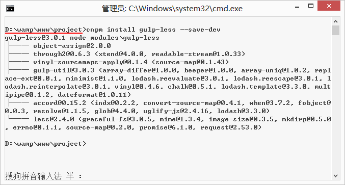

gulp是基于Nodejs的自动任务运行器， 她能自动化地完成javascript/coffee/sass/less/html/image/css等文件的的测试、检查、合并、压缩、格式化、浏览器自动刷新、部署文件生成，并监听文件在改动后重复指定的这些步骤。在实现上，她借鉴了Unix操作系统的管道（pipe）思想，前一级的输出，直接变成后一级的输入，使得在操作上非常简单。通过本文，我们将学习如何使用Gulp来改变开发流程，从而使开发更加快速高效。
gulp 和 grunt 非常类似，但相比于 grunt 的频繁 IO 操作，gulp 的流操作，能更快地更便捷地完成构建工作。
本示例以gulp-less为例（将less编译成css的gulp插件）展示gulp的常规用法，只要我们学会使用一个gulp插件后，其他插件就差看看其帮助文档了。让我们一起来学习gulp吧！ ^_^
gulp常用地址：
目录：
在学习前，先谈谈大致使用gulp的步骤，给读者以初步的认识。首先当然是安装nodejs，通过nodejs的npm全局安装和项目安装gulp，其次在项目里安装所需要的gulp插件，然后新建gulp的配置文件gulpfile.js并写好配置信息（定义gulp任务），最后通过命令提示符运行gulp任务即可。
安装nodejs -> 全局安装gulp -> 项目安装gulp以及gulp插件 -> 配置gulpfile.js -> 运行任务
1、安装nodejs
1.1、说明：gulp是基于nodejs，理所当然需要安装nodejs；
1.2、安装：打开nodejs官网，点击硕大的绿色Download按钮，它会根据系统信息选择对应版本（.msi文件）。然后像安装QQ一样安装它就可以了（安装路径随意）。
2、使用命令行（如果你熟悉命令行，可以直接跳到第3步）
2.1、说明：什么是命令行？命令行在OSX是终端（Terminal），在windows是命令提示符（Command Prompt）；
2.2、注：之后操作都是在windows系统下；
2.3、简单介绍gulp在使用过程中常用命令，打开命令提示符执行下列命令（打开方式：window + r 输入cmd回车）：
node -v查看安装的nodejs版本，出现版本号，说明刚刚已正确安装nodejs。PS：未能出现版本号，请尝试注销电脑重试；
npm -v查看npm的版本号，npm是在安装nodejs时一同安装的nodejs包管理器，那它有什么用呢？稍后解释；
cd定位到目录，用法：cd + 路径 ；
dir列出文件列表；
cls清空命令提示符窗口内容。

3、npm介绍
3.1、说明：npm（node package manager）nodejs的包管理器，用于node插件管理（包括安装、卸载、管理依赖等）；
3.2、使用npm安装插件：命令提示符执行npm install <name> [-g]
[--save-dev]；
3.2.1、<name>：node插件名称。例：npm
install gulp-less --save-dev
3.2.2、-g：全局安装。将会安装在C:\Users\Administrator\AppData\Roaming\npm，并且写入系统环境变量；
非全局安装：将会安装在当前定位目录； 全局安装可以通过命令行在任何地方调用它，本地安装将安装在定位目录的node_modules文件夹下，通过require()调用；
3.2.3、--save：将保存配置信息至package.json（package.json是nodejs项目配置文件）；
3.2.4、-dev：保存至package.json的devDependencies节点，不指定-dev将保存至dependencies节点；一般保存在dependencies的像这些express/ejs/body-parser等等。
3.2.5、为什么要保存至package.json？因为node插件包相对来说非常庞大，所以不加入版本管理，将配置信息写入package.json并将其加入版本管理，其他开发者对应下载即可（命令提示符执行npm install，则会根据package.json下载所有需要的包，npm install
--production只下载dependencies节点的包）。
3.3、使用npm卸载插件：npm uninstall <name> [-g] [--save-dev]
PS：不要直接删除本地插件包
3.3.1、删除全部插件：npm uninstall gulp-less gulp-uglify gulp-concat ……???太麻烦
3.3.2、借助rimraf：npm install rimraf -g 用法：rimraf node_modules
3.4、使用npm更新插件：npm update <name> [-g] [--save-dev]
3.4.1、更新全部插件：npm update [--save-dev]
3.5、查看npm帮助：npm help
3.6、当前目录已安装插件：npm list
PS：npm安装插件过程：从http://registry.npmjs.org下载对应的插件包（该网站服务器位于国外，所以经常下载缓慢或出现异常），解决办法往下看↓↓↓↓↓↓。
4、选装cnpm
4.1、说明：因为npm安装插件是从国外服务器下载，受网络影响大，可能出现异常，如果npm的服务器在中国就好了，所以我们乐于分享的淘宝团队干了这事。来自官网：“这是一个完整 npmjs.org 镜像，你可以用此代替官方版本(只读)，同步频率目前为 10分钟 一次以保证尽量与官方服务同步。”；
4.2、官方网址：http://npm.taobao.org；
4.3、安装：命令提示符执行npm install cnpm -g --registry=https://registry.npm.taobao.org； 注意：安装完后最好查看其版本号cnpm -v或关闭命令提示符重新打开，安装完直接使用有可能会出现错误；
注：cnpm跟npm用法完全一致，只是在执行命令时将npm改为cnpm（以下操作将以cnpm代替npm）。
5、全局安装gulp
5.1、说明：全局安装gulp目的是为了通过她执行gulp任务；
5.2、安装：命令提示符执行cnpm install gulp -g；
5.3、查看是否正确安装：命令提示符执行gulp -v，出现版本号即为正确安装。
6、新建package.json文件
6.1、说明：package.json是基于nodejs项目必不可少的配置文件，它是存放在项目根目录的普通json文件；
6.2、它是这样一个json文件（注意：json文件内是不能写注释的，复制下列内容请删除注释）：
{
"name": "test", //项目名称（必须）
"version": "1.0.0", //项目版本（必须）
"description": "This is a project !",//项目描述（必须）
"homepage": "", //项目主页
"repository": { //项目资源库
"type": "git",
"url": "https://git.oschina.net/xxxx"
},
"author": { //项目作者信息
"name": "surging",
"email": "surging2@qq.com"
},
"license": "ISC", //项目许可协议
"devDependencies": { //项目依赖的插件
"gulp": "^3.8.11",
"gulp-less": "^3.0.0"
}
}
6.3、当然我们可以手动新建这个配置文件，但是作为一名有志青年，我们应该使用更为效率的方法：命令提示符执行cnpm init

6.4、查看package.json帮助文档，命令提示符执行cnpm help package.json
特别注意：package.json是一个普通json文件，所以不能添加任何注释。参看 http://www.zhihu.com/question/23004511
7、本地安装gulp插件
7.1、安装：定位目录命令后提示符执行cnpm install --save-dev；
7.2、本示例以gulp-less为例（编译less文件），命令提示符执行cnpm install gulp-less
--save-dev；

7.3、将会安装在node_modules的gulp-less目录下，该目录下有一个gulp-less的使用帮助文档README.md；
7.4、为了能正常使用，我们还得本地安装gulp：cnpm install gulp --save-dev；
PS：细心的你可能会发现，我们全局安装了gulp，项目也安装了gulp，全局安装gulp是为了执行gulp任务，本地安装gulp则是为了调用gulp插件的功能。
8、新建gulpfile.js文件（重要）
8.1、说明：gulpfile.js是gulp项目的配置文件，是位于项目根目录的普通js文件（其实将gulpfile.js放入其他文件夹下亦可）。
8.2、它大概是这样一个js文件：
//导入工具包 require('node_modules里对应模块')
var gulp = require('gulp'), //本地安装gulp所用到的地方
less = require('gulp-less');
//定义一个testLess任务（自定义任务名称）
gulp.task('testLess', function () {
gulp.src('src/less/index.less') //该任务针对的文件
.pipe(less()) //该任务调用的模块
.pipe(gulp.dest('src/css')); //将会在src/css下生成index.css
});
//定义默认任务 elseTask为其他任务，该示例没有定义elseTask任务
gulp.task('default',['testLess', 'elseTask']);
//gulp.task(name[, deps], fn) 定义任务 name：任务名称 deps：依赖任务名称 fn：回调函数
//gulp.src(globs[, options]) 执行任务处理的文件 globs：处理的文件路径(字符串或者字符串数组)
//gulp.dest(path[, options]) 处理完后文件生成路径
8.3、该示例文件请下载查看
9、运行gulp
9.1、说明：命令提示符执行gulp 任务名称；
9.2、编译less：命令提示符执行gulp testLess；
9.3、当执行gulp default或gulp将会调用default任务里的所有任务[‘testLess’,’elseTask’]。
10、使用webstorm运行gulp任务
10.1、说明：使用webstorm可视化运行gulp任务；
10.2、使用方法：将项目导入webstorm，右键gulpfile.js 选择”Show Gulp Tasks”打开Gulp窗口，若出现”No task found”，选择右键”Reload tasks”，双击运行即可。